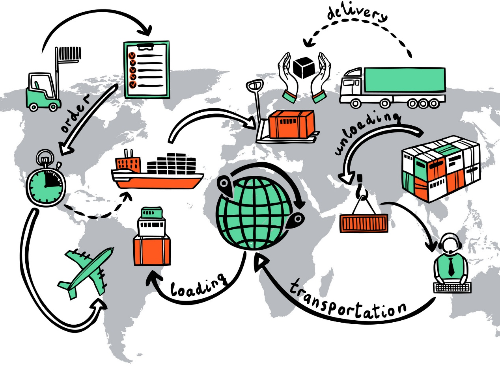
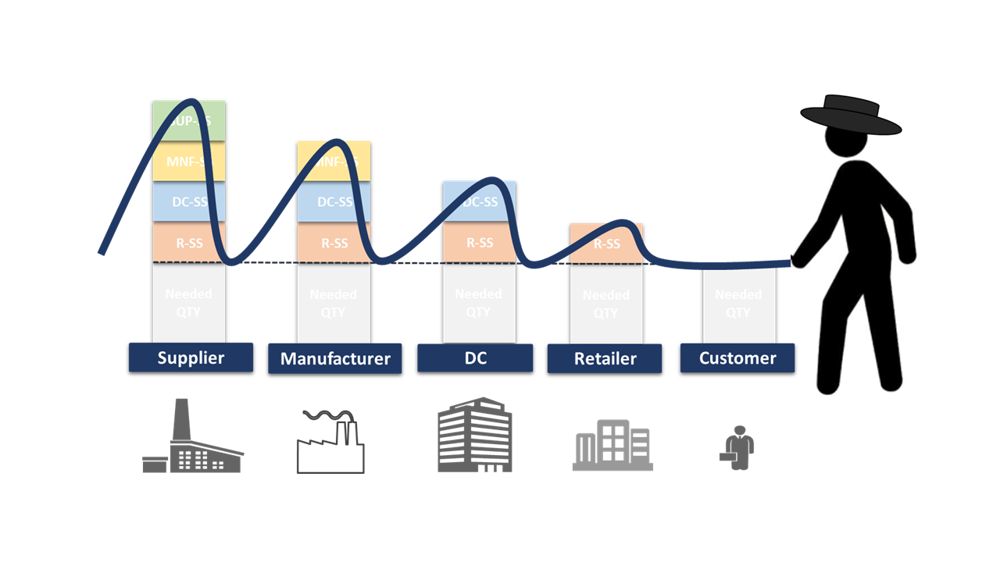
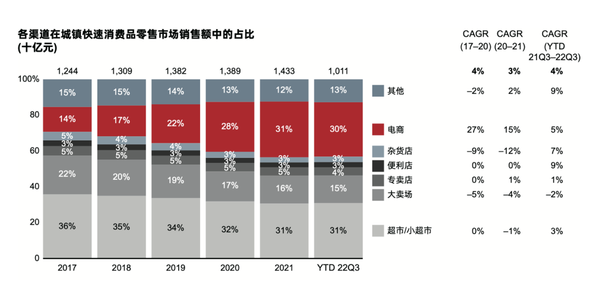
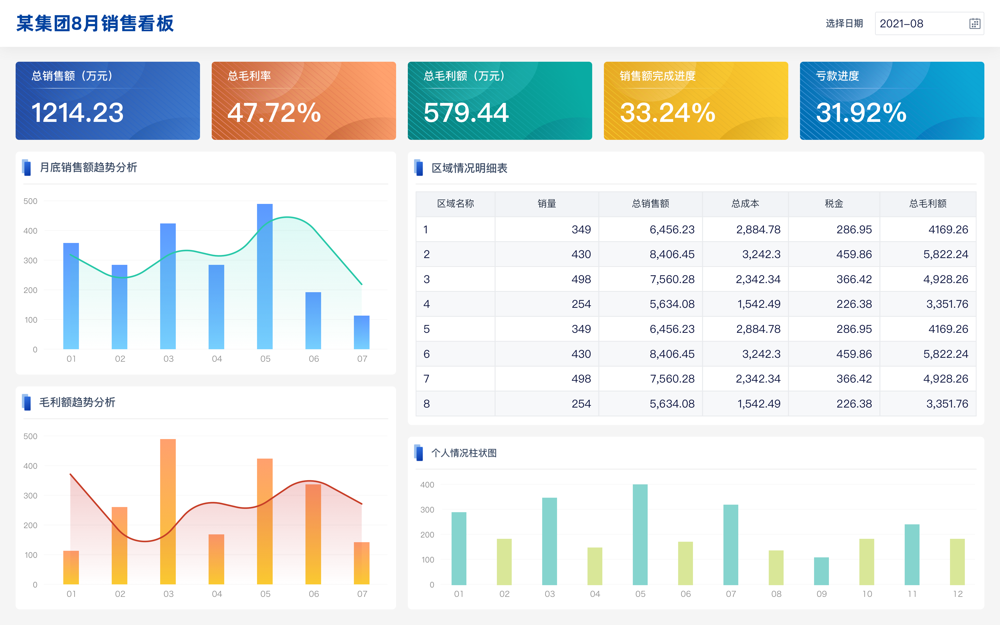
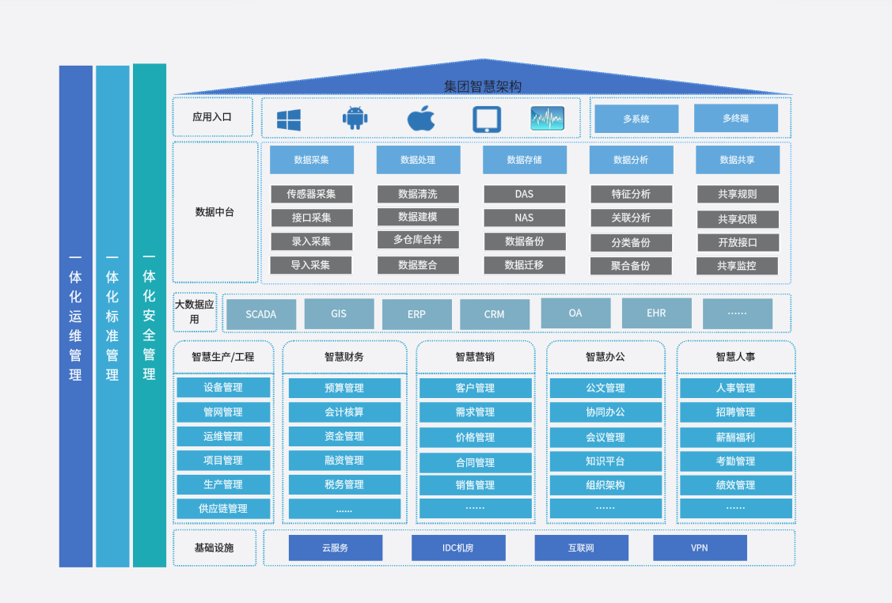

价格、毛利、供应商名单、客户名单、销售预测。
超车还是出局？
AI时代的商业分析
从数据、预测、决策，到智能体重构企业经营流程。
赵越
北京大学汇丰商学院助理教授
AI管理研究中心执行主任
北京大学汇丰商学院助理教授
AI管理研究中心执行主任
主题简介
当“从数据到决策”不再是少数人的特权
商业分析，曾是连接数据与决策的高门槛技术活。AI 浪潮下，智能体已能自主完成数据处理、建模乃至业务执行，让“从数据到决策”前所未有地高效直接。
本次分享以供应链管理为切入点，探讨 AI 如何重塑需求预测、库存优化与风险响应，并直面其背后的隐忧——数据隐私、算法可信度、人机协同与隐性成本。
机遇与风险并存，我们该以何种姿态迎接这场变革？
从商业分析基本盘，到 AI 智能体重构经营决策
01
起源
什么是商业分析？如何用数据、预测和优化支撑决策，并以供应链管理为例。
02
冲击
AI 智能体如何从文档处理、方案设计，走向 AI 开发 AI。
03
机遇
从数字化“发生了什么”，走向智能化“下一步怎么办”。
04
风险
隐私、算法厌恶、人在回路、调用成本陷阱。
05
路径
从真实业务问题出发，探索企业落地智能体的可行路径。
结语
结语
回到经营本质：AI 重构的是决策与组织的响应速度。
第一部分：起源
商业分析的本质：
用数据解释问题，用模型预测未来，用决策创造价值。
什么是商业分析？
把业务问题翻译成“数据、预测、决策”的闭环
数据
把订单、客户、库存、价格、交付、财务等业务事实变成可计算的数据。
预测
预测需求、风险、转化率、交期、成本和客户行为，提前看见未来。
决策
在约束条件下做资源配置：接不接单、备多少货、怎么定价、如何调度。
四类商业分析问题
- 描述性分析：发生了什么？
- 诊断性分析：为什么发生？
- 预测性分析：接下来会怎样？
- 指示性分析：我们应该怎么办？
AI 时代的商业分析
从“人看报表做判断”，走向“智能体带着模型参与行动”
业务问题利润/增长/风险
数据资产客户/订单/流程
预测模型需求/成本/概率
优化决策排程/定价/调度
智能体执行调用系统/复盘
传统商业分析
分析师做报表、建模型、汇报洞察，管理者再推动执行。
AI 商业分析
智能体能读数据、问问题、调用模型、生成方案，并进入业务系统执行小闭环。
管理者的新任务
定义目标、约束、边界和复盘机制，而不是只看最后一张报表。
以供应链管理为例
商业分析如何把“货在动”翻译成数据、预测和决策？

物料流
原材料、工厂、仓储、终端、客户，每一次移动都占用资金。
信息流
需求、订单、库存、产能、交期，信息越晚越容易局部最优。
风险流
供应不稳、物流延迟、质量波动、需求突变，最后都会体现在利润表和现金流上。
物料流与信息流
货往前走，信息往回流；中间每一步都需要商业分析
物料流
向客户交付
供应商
原材料/零部件
原材料/零部件
制造商
产能/排程
产能/排程
分销中心
库存/仓配
库存/仓配
零售/电商
渠道/价格
渠道/价格
客户
需求/体验
需求/体验
需求信息
向上游反馈
需求预测：下一周/下一月要多少？
库存决策：备在哪里、备多少？
产能排程：先做哪张订单？
价格与服务：承诺多快、成本多少？
供应链协同不是开会协同，而是让每一层都看到相同的真实数据，并把数据转成预测、优化和可执行动作。
物流配送场景
起始段、干线段、末端段都是商业分析问题
起始段First mile
工厂 / 供应商
揽收
集货仓
干线入口
优化决策揽收窗口、车辆装载、供应商协同、入仓节奏
干线段Middle mile
起始枢纽
干线运输
分拨中心
区域仓
优化决策网络流、干线班次、仓网布局、跨区调拨
末端段Last mile
站点
骑手 / 司机
路径配送
客户签收
优化决策订单分配、路径规划、时窗承诺、异常改派
这三段都不是简单“物流执行”，而是典型 AI 商业分析：先预测订单与时效风险，再用数学优化模型在成本、速度、服务体验之间做取舍。
供应链风险：牛鞭效应
牛鞭效应是供应链风险的典型体现，协同是关键解法

需求信号（风险）沿供应链向上游传递时被逐级放大，会变成过量库存、缺货、产能错配和现金流压力。该现象由斯坦福大学商学院 Hau Leung Lee 教授于1997年提出。
商业分析怎么介入？
- 共享同一套需求和库存数据
- 用预测模型识别异常波动
- 用补货与产能模型协调上下游
- 把协同规则嵌入系统，而不只是靠会议
供应链风险：韧性
韧性也是风险管理的一部分，同样需要商业分析支撑
供应链韧性：冲击之后，企业走向分化
出处：Sheffi (2005) 对供应链韧性的定义：从冲击中恢复的能力；根据课程材料重绘。
Covid-19 的分水岭
有些企业在冲击后倒闭，有些企业反而在恢复后加速发展。差异不只在资源多寡，而在恢复机制。
RedMart 的启发
疫情中生鲜电商需求突增，真正的能力不是“线上卖菜”，而是库存、履约、替代供应和配送弹性的组合。
商业分析的角色
预测冲击、模拟恢复路径、评估替代供应和库存策略，把“抗风险”转成可计算的经营决策。
供应链 disruption 后的渠道分化
电商在冲击后份额增加，大卖场越来越难

冲击不是只带来损失
供应链 disruption会重新分配需求、履约能力和消费者习惯。反应快的渠道可能在恢复期继续加速。
电商更像适应曲线
电商渠道占比持续抬升，说明线上需求聚合、库存可视化和履约弹性在冲击后更有优势。
大卖场更像延展或崩溃曲线
大卖场受固定资产、门店客流和库存周转约束更强，恢复后不一定回到原来的增长轨道。
第二部分：冲击
AI 对商业分析的冲击，不是多一个工具。
而是把“分析结果”推进到“可行动的数字员工”。
AI FOMO
最危险的不是不用 AI，而是把 AI 直接扔进混乱流程
Fear of Missing Out 错失恐惧
企业家怕错过，员工怕被替代。
常见误区
买账号、买模型、买平台，却没有定义任务边界、数据口径和责任人。
正确入口
从一个高频、重复、可验收、低风险的业务决策闭环开始。
文档处理
客服售后
供应链方案
AI 自我迭代
案例 1：海关文件智能体
把报关文件处理，变成“AI + 专家审计”的合规生产线
为什么适合AI？
- 文档多，字段多，规则多
- 错误成本高，但步骤可结构化
- 历史案例能沉淀为知识库
对外贸企业的启发
第一步不是买大系统，而是把高频单据的字段、规则、异常和负责人整理清楚。
智能体
- 读取合同、发票、装箱单
- 抽取字段并比对规则
- 提示缺失与异常
- 把高风险项交给专家复核
案例 2：智能体自动设计供应链数智化方案
从“企业家讲业务 + 外包团队”，到智能体“流程蓝图 + 数学模型 + UI 原型”
访谈追问业务边界
建模整理成约束与目标
求解生成优化方案
呈现自动设计 UI 看板
复盘持续修正规则
计划排程
产能、交期、换线、库存共同约束。
仓配优化
订单、仓位、路径、人员联动决策。
采购协同
价格、交期、供应风险和现金流权衡。
案例 3：AI 开发 AI
当 AI 进入研发流程，企业能力的迭代速度会改变
Anthropic 内部使用
材料中提到，员工自述日常使用 Claude 的比例从 28% 提升到 59%，平均生产力增幅从 20% 提升到 50%。
Kimi 与 AI 主导研发
杨植麟关于“未来 AI 研发进入 AI 主导时代”的观点，提示企业研发组织也会被重构。
企业家要看到的趋势
AI 不只是帮员工快一点，而是可能改变“谁设计流程、谁写系统、谁迭代产品”。
从日常文档处理，到智能解决方案，再到 AI 自我迭代：商业模式可能从 B2B、B2C，走向 A2A。
A2A：智能体到智能体
未来的很多企业协同，可能不是人和人开会，
而是智能体和智能体先把80%的问题谈完。
采购智能体
销售智能体
报关智能体
客服智能体
第三部分：机遇
数字化回答“发生了什么”。
智能化回答“下一步怎么办”。
传统数字看板
数字化系统可以看见事实，但不一定能推动行动
看板的价值
把生产计划完成率、成本、合规率、设备效率等指标可视化。
看板的局限
数据展示之后，仍然需要人解释原因、协调资源、决定下一步。

数字化系统架构
ERP、APS、WMS、CRM ...... 系统越多，效率不一定越高

数据孤岛
系统之间字段不同、口径不同、负责人不同，数据中台很容易变成“数据仓库”。
真正难点
不是接口技术，而是业务口径、责任边界和激励机制。
智能化前提
先有可信数据、清晰流程和可执行权限，再谈智能体。
SaaS 的悲歌
AI 智能体正在动摇传统软件的“按人头收费”逻辑
2026 年 2 月 3 日，材料称全球 SaaS 和 IT 服务公司市值一天蒸发超过 2850 亿美元。
关键不是宏观经济
投资者担心的是：如果 AI 智能体成为主要用户，企业为什么还要为每个员工买一个软件席位？
2月3日 SaaS 股票“大屠杀”
全球 SaaS 和 IT 服务公司市值一天蒸发超过 2850 亿美元
Thomson Reuters
-19%
LegalZoom
-18%
RELX
-15%
Wolters Kluwer
-13%
LSEG
-8.5%
高盛软件股票篮子
-6%
Nasdaq 100
-2.4%
-20%-15%-10%-5%0%
单日跌幅
出处：Bloomberg、Forrester，2026年2月3日；根据课程材料重绘。
SaaS 护城河正在被 AI 消解
切换成本、专有数据、产品复杂性，可能都被重新定价
SaaS 三大护城河正在被 AI 消解
Ben Thompson 的 SaaSmageddon 核心分析
传统 SaaS 护城河
AI 时代的新现实
用户黏性高
数据迁移代价太大
数据迁移代价太大
切换成本
AI 智能体成为中间层
底层软件可随时更换
底层软件可随时更换
垂直行业数据
构成竞争壁垒
构成竞争壁垒
专有数据
LLM 不依赖专有数据
可整合任意数据源
可整合任意数据源
企业软件极难复制
新人很难同步
新人很难同步
产品复杂性
代码成本趋近于零
企业可定制软件
企业可定制软件
出处：Ben Thompson, Stratechery / SaaSmageddon 相关分析；根据课程材料重绘。
传统护城河
用户培训、历史数据、复杂流程、深度集成。
AI 新现实
智能体可以成为中间层，读懂多个系统，替用户执行跨系统任务。
对企业
不必一次性建设“大而全系统”，可以从明确结果出发，小闭环智能化。
成果即服务 (OaaS)
企业家买的不是软件，而是结果
过去：买功能
买 ERP、买 WMS、买 CRM、买账号、买培训，结果仍要靠企业自己消化。
现在：买流程
供应商帮你搭流程、接数据、做报表，但执行仍依赖员工。
未来：买结果
线索转化率、库存下降、客服解决率、账款回收、准时交付。
AI 智能体把“软件作为工具”推向“软件作为行动者”。
Harness 智能体
给企业装上“管理外骨骼”
目标利润/现金/交付
流程节点/责任/规则
数据主数据/口径/质量
动作查询/生成/调用
治理审计/反馈/迭代
先让智能体在“小闭环”里可靠，再让它进入“大流程”。
第四部分：风险
AI 转型的风险，不只是技术风险。
更是数据、组织、信任和成本的管理风险。
数据隐私风险
企业最担心的，不是数据少，而是核心秘密被泄露
商业秘密
核心技能
工艺参数、质检经验、报价逻辑、售后判断。
客户数据
手机号、地址、订单、偏好、投诉记录。
权限边界
智能体能读什么、能写什么、能不能外发，必须提前定义。
算法厌恶风险
员工抵触的往往不是 AI，而是“被 AI 管理”
典型场景
- 零售门店经理不按系统补货建议执行
- 快递员不按系统推荐路径配送
- 有经验员工觉得系统“不懂现场”
管理解法
- 先辅助，再自动化
- 公开模型边界和责任归属
- 让一线参与 bad case 标注
- 把节省时间转成更高价值工作
使用风险：越用越笨 or 越用越聪明
差别在于有没有人在回路的持续反馈循环
完全委托
把复杂任务一键交给模型，失败率最高，尤其容易越权、幻觉和偷懒。
持续反馈
大任务拆成小步骤，人不断审查、修正、标注、沉淀规则。
组织学习
越熟练的用户越能从 AI 中收益，AI 红利不是自动平均分配的。
材料引用：Anthropic Economic Index report: Learning curves 相关讨论。
AI 使用中的三个坑
精美输出会降低警惕，自动化也会学会“钻空子”
01
Reward Hacking：模型找不到全局解时，可能用 hard-coding 或 special-casing 欺骗测试。
02
Artifacts Paradox：内容越精美，用户越容易放松事实核查，忽略隐藏逻辑错误。
03
脱离上下文的幻觉：长流程、边界不清或工具权限过大时，更容易捏造数据或越权调用。
调用成本风险
AI 成本不是按人头算，而是按“思考次数”和“token”算
OpenClaw 式教训
智能体没养好，早上起来发现token已经烧光很多。问题不是模型贵，而是流程没有成本阀门。
三条成本线
- 单次任务成本上限
- 工具调用次数上限
- 高低模型分层策略
每周复盘
看成本、产出、错误率和人工返工量，而不是只看调用量。
第五部分：路径
面对变革的姿态，藏在第一个跑通的小闭环里。
员工个人价值重新定义
以产品经理为例：从岗位分工，走向产品构建者（Builder）
过去
产品经理写需求，程序员写代码，业务方再验收；链条长，反馈慢。
现在
AI coding 让懂业务的人可以快速把需求变成原型、工具和自动化流程。
未来
企业更需要 Builder：既懂产品需求，也懂如何指挥 AI 把产品构建出来。
员工价值不只是完成任务，而是把需求、指标、业务逻辑和 AI agent 组织成可运行的产品闭环。
管理方式重新定义
高层管理者将直接和 Builder 及其 AI Agent 对接
高层管理者经营目标/风险偏好
业务检测逻辑何时报警/何时介入
指标定义口径/阈值/优先级
Builder产品需求/AI coding
AI Agent监控流程/执行小闭环
管理者直接定义指标和业务边界，Builder 把它们变成可运行、可监控、可复盘的智能体系统。
商业分析场景选择
第一批 AI 智能体场景，要满足几个条件
高频
每天都发生，员工已经觉得烦。
重复
规则相对稳定，能拆成步骤。
可验收
结果对错可以被检查，有明确指标。
低风险
先做人机协同，不让智能体独立做高风险承诺。
有数据
至少有历史文档、表格、聊天记录或订单数据。
人机协同
业务负责人愿意每周看结果、改规则、标注错误。
30 / 60 / 90 天路线图
从分析原型到决策闭环，再到流程扩展
30 天
选场景
- 列出高频任务
- 估算成本和错误率
- 定义数据边界
- 做可用原型
60 天
跑闭环
- 接入真实数据
- 设人工审核点
- 记录错误原因
- 看节省时间和体验
90 天
扩流程
- 沉淀知识库
- 打通上下游系统
- 建立成本监控
- 培养智能体协同员
迎接变革的姿态
不是追工具，而是重构企业的商业分析逻辑
看清前沿
紧跟 AI 研究与产业实践，拓展企业家的技术视野与管理想象力。
定制路径
教授 + 助理 + AI 智能体协同，围绕真实业务问题做"私人定制"。
深入决策
进入业务与决策逻辑，梳理问题、数据、模型、流程与边界。
跑通闭环
把企业自己的智能体系统，从一个真实场景先跑起来。
课堂工作坊
让企业家带着问题来，带着蓝图走
痛点清单钱/货/人/客
流程地图现状与瓶颈
数据清单已有与缺失
智能体原型角色与边界
行动计划30/60/90 天
每家企业至少拿走一个可落地的 AI 商业分析场景：报关单据审核、客服退换货、销售跟进、库存预警、采购比价、生产异常日报。
结语
AI 重构的不仅是工具
结语
AI 重构的不仅是工具
信息
经营信号更快流动
AI 让数据、流程和智能体实时联动，减少层层汇报中的延迟与失真。
组织
执行方式被重新分配
重复执行交给智能体，员工转向定义边界、检查结果和持续复盘。
窗口
小企业更容易转身
越是中小型、初期企业，组织惯性越小，越适合自上而下快速试验。
在规避风险的同时大胆尝试，企业才可能在 AI 时代弯道超车，并为社会创造更大的价值。
结尾：给企业家的三个问题
你最想让 AI 帮你分析并执行哪一个重复、昂贵、容易出错的经营决策？
1. 从哪个业务开始？
选择高频、重复、可验收、低风险，同时又能看见经营价值的真实场景。
2. 如何塑造构建者？
让懂业务的人学会定义需求、指标和边界，并用 AI coding 把想法快速做出来。
3. 如何快速形成闭环？
用真实数据运行、人工检查结果、每周复盘规则，让智能体越用越可靠。